Усе в одному місці
Не треба шукати різних лікарів по місту і пересилати результати між клініками.

Медичний центр «Ангелія» в Києві. Консультація, аналізи, УЗД, лікування і стаціонар — в одному місці. Якщо випадок складний, лікарі різних напрямків складають один план.
Для нас важлива не лише медицина, а й ставлення: повага, підтримка і увага до кожного пацієнта.
Не треба шукати різних лікарів по місту і пересилати результати між клініками.
Працюємо з людиною цілісно: тіло, душа і дух. Повага до гідності пацієнта — основа роботи команди.
Якщо потрібен постійний нагляд, інфузійна терапія чи відновлення — є стаціонар у самій клініці.
Коли не знаєте, до якого лікаря звернутися — почніть із сімейного.
Сімейний лікар допомагає розібратися в симптомах, провести первинну діагностику і за потреби скерувати до вузького спеціаліста. Супроводжує від профілактики до лікування хронічних станів.
Звертайтеся, якщо
Коли емоційний стан починає впливати на повсякденне життя — не варто залишатися з цим наодинці.
Психіатр оцінює стан, за потреби встановлює діагноз і підбирає лікування за принципами доказової медицини. Психолог допомагає розібратися в переживаннях, стресі, стосунках і кризах. Є спеціалісти, які працюють із дітьми та підлітками.
Звертайтеся з
Медична допомога під постійним наглядом лікарів — коли амбулаторно вже недостатньо.
Стаціонар потрібен, коли необхідне цілодобове спостереження, інфузійна терапія або комплексне відновлення. Формат і тривалість визначає лікар. Палати «Комфорт» і «Стандарт», триразове харчування.
У стаціонарі
Допомога, коли самостійно впоратися вже складно — і для людини, і для родини.
Консультація спеціаліста, медична допомога при гострих станах, детоксикація і подальший супровід. Працюємо анонімно, з повагою і без засудження.
Допомагаємо при
Від профілактичної чистки до імплантації — в одній клініці, з лікарями різних спеціалізацій.
Терапія, хірургія та імплантація, ортопедія, ортодонтія і дитяча стоматологія. Лікування кореневих каналів з мікроскопом, професійна гігієна, Air Flow.
Спектр послуг
Турбота про жіноче здоров’я — це не лише лікування, коли вже болить.
Консультація, огляд, кольпоскопія, УЗД органів малого таза. Допомога з циклом, плануванням вагітності, менопаузою і питаннями тазового дна.
Головний біль, серце і гормони впливають на самопочуття більше, ніж здається.
Невролог — мігрень, запаморочення, біль у шиї та спині, порушення сну, оніміння кінцівок.
Кардіолог — тиск, серцебиття, біль у грудях, задишка, профілактика здоров’я серця.
Ендокринолог — щитоподібна залоза, діабет, зміни ваги, гормональний дисбаланс. Є онлайн-прийом.
Біль у суглобах або наслідки травми не повинні ставати нормою.
Ортопед-травматолог допомагає з болем у суглобах і спині, наслідками травм і обмеженням рухливості. Реабілітація повертає силу і повсякденні навички після травми, операції чи хвороби. Масаж — лікувальний і відновлювальний, за показаннями.
Щоб лікувати причину, спочатку потрібно її знайти — і здати все можна тут же.
Лабораторія виконує широкий спектр аналізів. УЗД органів черевної порожнини, нирок, щитоподібної залози, малого таза і судин — швидко, безболісно, результат одразу. Також ЕКГ та інші дослідження за показаннями.
Пн–Чт: 9:00–20:00 · Пт: 9:00–16:00 · Сб–Нд: вихідний
Онлайн-запис Повний сайт